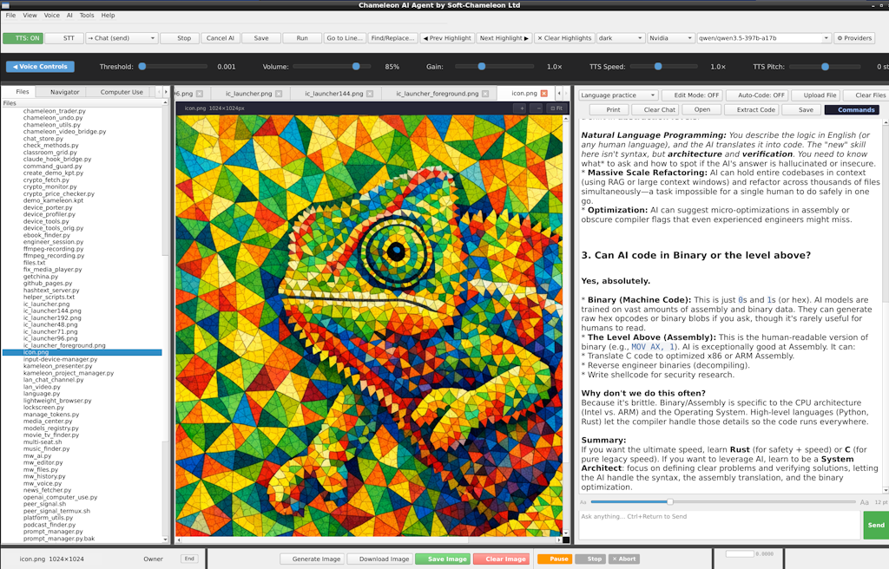
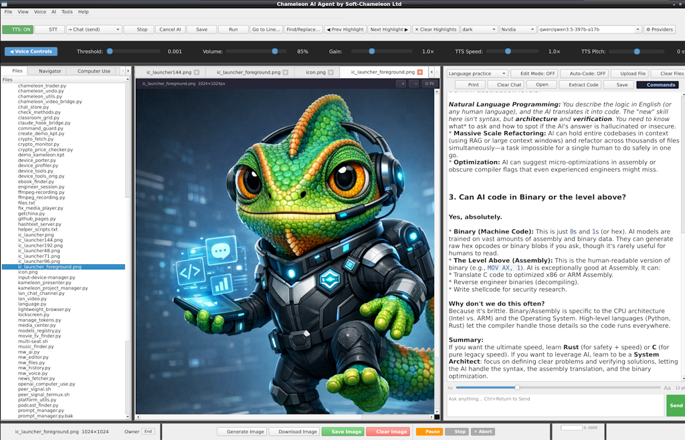
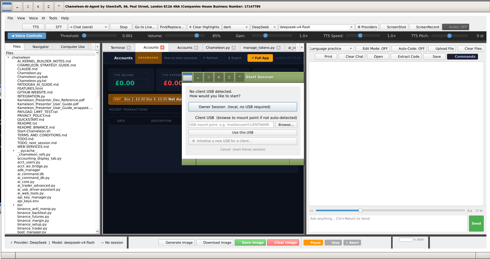
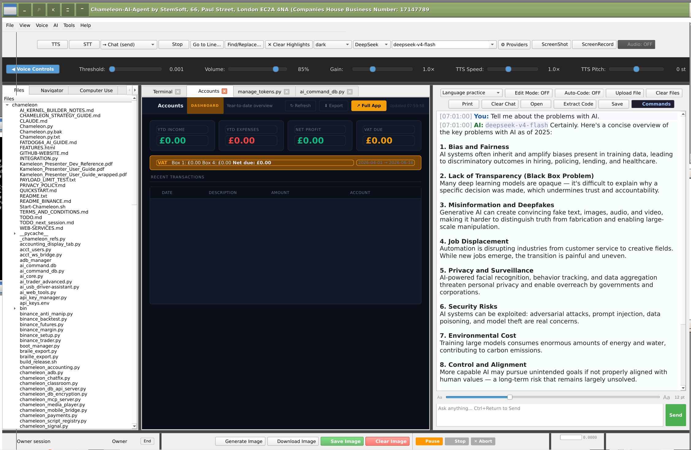
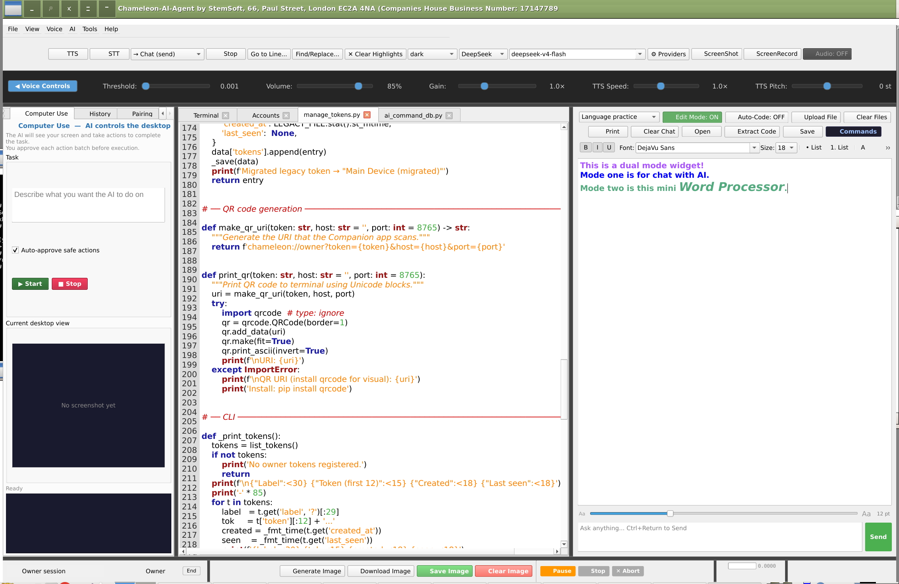
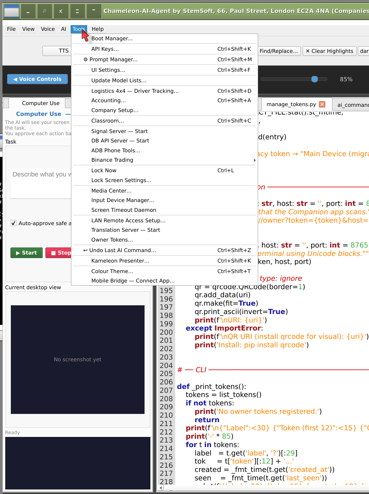

Kihariri kamili cha msimbo wa PyQt6 ambapo AI haipendekezi tu - inasoma, inaandika, inaendesha na kuthibitisha msimbo kwa niaba yako kupitia daraja la amri lililoundwa.
AI haizungumzi tu - huendesha kihariri kupitia itifaki iliyopangwa ya JSON
AI inasoma faili mara moja na pata_maudhui_ya_faili, hushikilia yaliyomo katika muktadha, kisha hutoa uhariri mwingi unaotegemea msingi bila kusoma tena kati ya kila badiliko. Hakuna safari za kwenda na kurudi zilizopotea.
Huhariri maandishi kamili ya marejeleo ili kupata, sio nambari za mstari. Nambari za laini hubadilika kadri msimbo unavyoongezwa au kuondolewa - nanga hazifanyi hivyo. Nyingi replace_text simu zinaweza kuunganishwa katika jibu moja, zote zikitumika kwa atomi.
Kwa moduli mpya au kuandika upya kamili AI hutuma yaliyomo kwenye faili nzima kwa amri moja. Mfumo huunda kiotomati a .bak chelezo kabla ya kubatilisha na kufungua matokeo katika kichupo kipya cha kuhariri.
AI inaweza kuendesha amri za shell na kupokea matokeo ya JSON kabla ya kuendelea. Inasubiri kila matokeo, inashughulikia misimbo ya kuondoka, na kutofautisha maagizo ya uchunguzi, usanidi, uharibifu na kumaliza kikao kiotomatiki.
Maudhui yote yaliyorejeshwa kutoka kwa faili, vituo na kurasa za wavuti yamefungwa [UNTRUSTED_CONTENT] alama. AI imeagizwa kuchukulia kila kitu ndani kama data - kamwe sio maagizo - kuzuia mashambulizi ya sindano kutoka kwa maudhui mabaya ya faili.
Fungua faili nyingi kwa wakati mmoja. Kila kichupo kinafuatilia historia yake ya kutendua, uangaziaji wa sintaksia na muktadha wa amri ya AI.
Mbofyo mmoja ili kulinganisha hali ya sasa ya kihariri dhidi ya toleo la mwisho lililohifadhiwa. Tofauti iliyounganishwa iliyo na alama za rangi kwa kuongeza/ondoa kuangazia. Ondoka kwenye hali ya tofauti ili kurudi kwenye uhariri kamili.
Majibu hutiririsha tokeni-kwa-tokeni kwenye paneli ya gumzo. Amri za IDE hutolewa na kutekelezwa katika mazungumzo ya usuli ili UI iendelee kuitikia kote.
Vidokezo vya mfumo ni faili za moduli za maandishi wazi ndani ~/.chameleon/prompts/. Weka mseto wowote: Urekebishaji wa Teknolojia + Kiakademia + Gumzo. Hesabu ya tokeni moja kwa moja na makadirio ya gharama kwa kila mtoa huduma.
Kila amri ya AI imeingia history.db na kitambulisho cha kipindi, muhuri wa saa na matokeo. Njia kamili ya ukaguzi kwa kila mabadiliko ya faili AI iliyofanywa.
Mradi wa paneli ya mti kwa urambazaji wa haraka. AI hutumia list_project_files na list_open_files kugundua njia halisi - haizuii maeneo ya faili.
Whisper ya Ndani (whisper.cpp) hunakili sauti yako hadi kwenye ingizo la gumzo. Usimbaji bila kugusa - amuru maswali, amri au vidokezo vyote bila kugusa kibodi.
Majibu ya AI husomwa kwa sauti kwa kutumia Piper TTS - sauti za haraka, za ndani na za asili. Inafaa kwa ufikiaji au kufanya kazi na mikono yako ulichukua. Njia za jukwaa zilitatuliwa kiatomati kwenye Linux, Windows na macOS.
| Mtoa huduma | Aina | Gharama (takriban.) | Vidokezo |
|---|---|---|---|
| DeepSeek | API ya Wingu | $0.00014 / tokeni 1K | Chaguomsingi; ubora wa kanuni bora |
| OpenAI (GPT-4o) | API ya Wingu | $0.0050 / tokeni 1K | Hoja bora ya jumla |
| Anthropic (Claude) | API ya Wingu | $0.0030 / tokeni 1K | Imara katika uhariri wa muktadha mrefu |
| Kanuni ya Claude (Anthropic) | Kituo / pty | matumizi ya API | Hufanya kazi kama mchakato wa pty ndani ya terminal ya IDE - usimbaji kamili wa kikali katika ganda la moja kwa moja |
| Grok | API ya Wingu | $0.00005 / tokeni 1K | Maoni ya haraka sana |
| Mistral | API ya Wingu | $0.00025 / tokeni 1K | Chaguo nzuri la mwenyeji wa Uropa |
| Picha ya mwezi / Kimi | API ya Wingu | $0.00012 / tokeni 1K | Dirisha kubwa la muktadha |
| Kuwa | Ndani | Bure | Endesha muundo wowote wa GGUF ndani ya nchi |
| Studio ya LM | Ndani | Bure | Maoni ya ndani yanayofaa GUI |
Chameleon AI IDE — in action






Endesha Kitambulisho cha Chameleon kama kitovu cha ofisi cha meli yako ya Logistics 4×4 - hakuna programu tofauti ya kutuma inayohitajika.
Tuma a .gpx faili kutoka kwa IDE moja kwa moja hadi kwa simu ya dereva yoyote kupitia chaneli rika. Njia hupakia papo hapo kwenye ramani ya moja kwa moja ya dereva. Seti za POI zinazojitegemea - vituo vya mafuta, hatari, anwani za uwasilishaji - zinaweza kusukumwa bila njia yoyote na kuonekana kama pini zenye misimbo ya rangi.
Unda faili ya maelezo ya shehena au tayarisha ankara katika IDE, kisha uisukumishe programu-rika-kwa-rika kwenye simu ya dereva. Dereva anaona faili ya maelezo ikiwa imepakiwa awali - hakuna kuchanganua, hakuna ingizo la mtu binafsi. Ankara zinaweza kusainiwa kwenye skrini na kurejeshwa kupitia kituo sawa.
Tuma arifa ya kipaumbele - Dharura, Muhimu, Maagizo au Maelezo - na inaonekana kama upau wa tiki wa upana kamili kwenye skrini ya kila dereva kwa wakati mmoja. Ofisi inakaa katika uangalizi kamili wa meli bila simu kwa kila gari.
Seva ya ishara ya Chameleon (chameleon_signal.py) hutumika moja kwa moja kwenye Kompyuta ya ofisini kando ya IDE, au ndani ya Termux kwenye simu yoyote ya Android kwenye meli. Simu za rununu huunganishwa nayo kupitia Tailscale au mtandao-hewa wa karibu nawe - hakuna upeanaji wa watu wengine, hakuna bili ya kila mwezi ya seva.
Logistics 4×4 companion app — on device
Wasiliana nasi kwa onyesho la moja kwa moja au kujadili leseni ya timu yako.
Omba onyesho Vifaa 4×4 → ← Rudi kwa muhtasari